1036C10 camshaft in cylinder head - r r on vehicle
- Path
- Procedures > 10 ENGINE > 1036 TIMING SYSTEM > 1036C overhead camshafts (2) > 1036C10 camshaft in cylinder head - r r on vehicle
- Kind
- repair procedure (removal / refitting; the operation number is the code)
- Applies to
- engines: 1.6 TS , 1.8 TS, 2.0 JTS, 2.0 JTS; all production periods
- Interactive page
- https://sloeber94.github.io/elrnDB-a156/en/#/3237670
Applies to: engines: 1.6 TS , 1.8 TS; all production periods
 Removing
Removing
 Refitting
RefittingPlace the car on the lifting bridge.
4450B10 Front WHEEL (one) - R.R.
7055B64 Engine compartment DUST shield in front wheel arch (one), left or right - R.R.
7055B54 under-engine guard - r r
1016A40 ignition coil cover on cylinder head- r+r
1016A20 single cam cover - r + r and replace gasket
1092G10 single engine belt r r
1092G20 engine component single belt fixed tensioner - one - r + r
1092A12 crankshaft pulley - r+r for versions with air conditioner
Applies to: all engines; all production periods
Applies to: engines: 1.6 TS , 1.8 TS; all production periods
1. Unscrew screws (1a) of intake side timing driven pulley by using tool (1b) as countertorque.
 | Name | Country |
|---|---|---|
1b | Counter-torque | 1.822.155.000 |
2. Remove intake side timing driven pulley.
3. Unscrew screw (3a) of exhaust side timing driven pulley by using tools (3b) and (3c) as countertorque.
| Name | Country |
|---|---|---|
3b | Counter-torque | 1.822.156.000 |
| Name | Country |
|---|---|---|
3c | Counter-torque | 1.822.146.000 |
4. Remove exhaust side timing driven pulley.
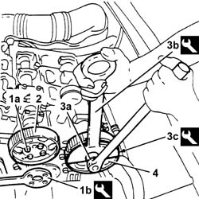
Applies to: engines: 1.6 TS , 1.8 TS; all production periods
1. Unscrew screw (1a) and move cam angle sensor (1b) away from cylinder head.
 | Name | Connector |
|---|---|---|
1b | Timing sensor |
2. Unscrew screws (2a) and remove camshaft caps (2b).
3. Remove upper half bearing of intake side camshaft front mount.
4. Remove camshafts.
5. Remove lower half bearing of intake side camshaft front mount
6. Remove camshaft front oil seals.
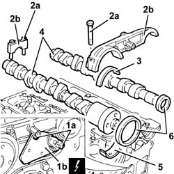
Applies to: engines: 1.6 TS , 1.8 TS; all production periods
Refitting
RemovingFit lower half bearing of intake side camshaft front mount.
Fit camshafts.
Fit upper half bearing of intake side camshaft front mount.
Fit camshaft caps except the 3rd mount ones and fix them with their screws to the prescribed torque.
 | Fastening | Component | Ø | Value (daNm) |
|---|---|---|---|---|
- | Bolt | Camshaft caps | M7 | 1.3 - 1.6 |
1. Fit exhaust side camshaft front oil seal (1a) by means of tool (1b).
| Name | Country |
|---|---|---|
1b | Fitting tool | 1.821.228.000 |
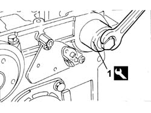
Applies to: engines: 1.6 TS , 1.8 TS; all production periods
1. Fit intake side camshaft front oil seal (1a) by means of tool (1b).
| Name | Country |
|---|---|---|
1b | Fitting tool | 1.821.251.000 |
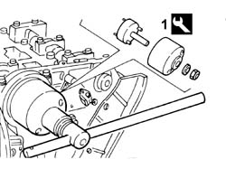
Applies to: engines: 1.6 TS , 1.8 TS; all production periods
Place cam angle sensor back in its seating and fix it with its screw.
Fit exhaust side timing driven pulley and fix it with its screw without tightening it.
Fit intake side timing toothed driven pulley and fix it with its screws without tightening them.
Applies to: all engines; all production periods
Applies to: engines: 1.6 TS , 1.8 TS; all production periods
1032D12 timing system protective cover(s) - r + r
1092A12 crankshaft pulley - r+r for versions with air conditioner
1092G20 engine component single belt fixed tensioner - one - r + r
1092G10 single engine belt r r
1016A20 single cam cover - r + r and replace gasket
1016A40 ignition coil cover on cylinder head- r+r
7055B54 under-engine guard - r r
7055B64 Engine compartment DUST shield in front wheel arch (one), left or right - R.R.
4450B10 Front WHEEL (one) - R.R.
Take the car off the lifting bridge.
Applies to: engines: 2.0 JTS, 2.0 JTS; all production periods
Removing
RefittingPosition the vehicle on the ramp.
DRAIN THE FUEL HIGH-PRESSURE SYSTEM AS DESCRIBED BELOW.
Start up the engine.
Maintain idle for 2 minutes.
Remove the fuel pump relay.
Wait for the engine to stall.
Try to start the engine: if the engine starts within 10 seconds, wait for it to stall, then try to start it again; if the engine does not start withiin 10 seconds, continue cranking for a further 5 seconds.
Wait until the engine cools down.
Ensure that the ignition key is in the OFF position, then disconnect the negative battery terminal (-).
| Name | Connector |
|---|---|---|
- | Battery |
Proceed with removal 4450B04 right front wheel r r .
Proceed with removal 7055B54 under-engine guard - r r .
Proceed with removal 1016A40 ignition coil cover on cylinder head- r+r .
Proceed with removal 1032B10 toothed timing belt - r + r for timing adjustment or replacement .
Proceed with the removal 1032B52 toothed driven pulley (one) - r + r (intake side and exhaust side)
1. Loosen the band and disconnect the vacuum pipe from the corrugated sleeve.
2. Loosen the bands (2a) and remove the rigid pipe (2b) complete with corrugated air inlet hose (2c) from the air filter to the throttle casing.
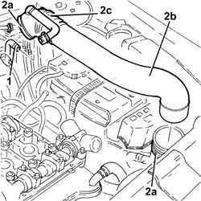
Applies to: engines: 2.0 JTS, 2.0 JTS; all production periods
1. Disconnect the rapid attachment for the fuel bypass pipe from the fuel manifold.
2. Undo the connectors (2a), (2b) and remove the high-pressure pipe from the pressure pump to the single fuel manifold pipe (2c).
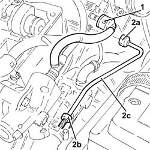
Applies to: engines: 2.0 JTS, 2.0 JTS; all production periods
1. Disconnect the rapid connector on the fuel supply pipe from the pressure pump.
2. Undo the bolts (2a) and remove the pressure pump (2b) complete with O-ring (2c).
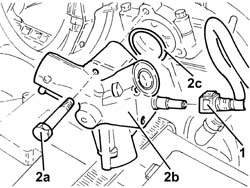
Applies to: engines: 2.0 JTS, 2.0 JTS; all production periods
1. Undo bolts (1a) and move cam angle sensor (1b).
2. Undo the bolts (2a) and remove the camshaft caps (2b).
3. Remove the upper bearing shell for the front camshaft support, inlet side.
4. Remove the camshafts (4a) and the front oil seals (4b).
5. Remove the lower bearing shell for the front camshaft support, inlet side.
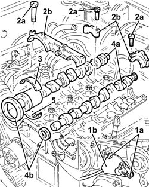
Applies to: engines: 2.0 JTS, 2.0 JTS; all production periods
Refitting
Removing1. Place the inlet side camshaft front support lower bearing shell back in its housing.
2. Place the camshafts back in their housings.
3. Place the inlet side camshaft front support upper bearing shell back in its housing.
4. Place the camshaft caps (4a) back in their housings and secure them tightening the bolts (4b) to the recommended torque.
| Fastening | Component | Ø | Value (daNm) |
|---|---|---|---|---|
4b | Bolt | CAMSHAFT SUPPORTS | M7 | (Cylinder head side) 1.4 ÷ 1.7 |
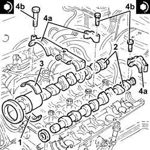
Applies to: engines: 2.0 JTS, 2.0 JTS; all production periods
1. Fit the front camshaft oil seal, exhaust side (1a) using the tool (1b).
| Name | Country |
|---|---|---|
1b | Fitting tool | 1.821.228.000 |
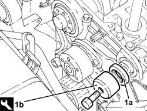
Applies to: engines: 2.0 JTS, 2.0 JTS; all production periods
1. Fit the front camshaft oil seal, inlet side (1a) using the tool (1b).
| Name | Country |
|---|---|---|
1b | Fitting tool | 1.821.252.000 |
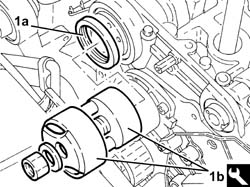
Applies to: engines: 2.0 JTS, 2.0 JTS; all production periods
Place the cam angle sensor back in its housing and fix it using the bolts.
1. Place the pressure pump (1a), complete with O-ring (1b), back in its housing and fix it tightening the bolts (1c) to the recommended torque.
| Fastening | Component | Ø | Value (daNm) |
|---|---|---|---|---|
1c | Bolt | HIGH PRESSURE FUEL PUMP | M6 | (Cylinder head side) 0.8 ÷ 1.0 |
2. Connect the rapid connector on the fuel supply pipe to the pressure pump.
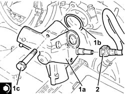
Applies to: engines: 2.0 JTS, 2.0 JTS; all production periods
1. Refit in its seating a new high-pressure pipe from the pressure pump to the single fuel manifold pipe (1a) and tighten the connectors (1b) and (1c) to the specified torque.
| Fastening | Component | Ø | Value (daNm) |
|---|---|---|---|---|
1b | Connector | FUEL HIGH PRESSURE PIPE | M22 | (High pressure pump side) 1.6 ÷ 2.0 |
| Fastening | Component | Ø | Value (daNm) |
|---|---|---|---|---|
1c | Connector | FUEL HIGH PRESSURE PIPE | M12 | (Fuel manifold pipe side) 2.0 ÷ 2.4 |
2. Connect the rapid attachment for the fuel bypass pipe to the fuel manifold.
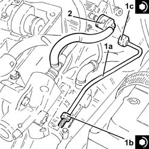
Applies to: engines: 2.0 JTS, 2.0 JTS; all production periods
Place the rigid air supply pipe with corrugated air intake sleeve from the filter to the throttle body back in its housing and secure it using the bands.
Connect the vacuum pipe to the corrugated hose and tighten the band.
Proceed with the refitting 1032B52 toothed driven pulley (one) - r + r (intake side and exhaust side).
Proceed with refitting 1032B10 toothed timing belt - r + r for timing adjustment or replacement .
Proceed with refitting 1016A40 ignition coil cover on cylinder head- r+r .
Proceed with refitting 7055B54 under-engine guard - r r .
Proceed with refitting 4450B04 right front wheel r r .
Connect the negative (-) battery terminal.
Remove the car from the ramps.
Topics linked from this page (17)
- 1016A20 single cam cover - r + r and replace gasket
- 1016A40 ignition coil cover on cylinder head- r+r
- 1032B10 toothed timing belt - r + r for timing adjustment or replacement
- 1032B14 toothed timing belt - r + r for timing adjustment or replacement versions with air conditioner
- 1032B52 toothed driven pulley (one) - r + r
- 1032D12 timing system protective cover(s) - r + r
- 1092A12 crankshaft pulley - r+r for versions with air conditioner
- 1092E10 counter-rotating shaft drive toothed belt - r + r
- 1092G10 single engine belt r r
- 1092G20 engine component single belt fixed tensioner - one - r + r
- 4450B04 right front wheel r r
- 4450B10 Front WHEEL (one) - R.R.
- 5510C14 ignition coil/s - r+r
- 7055B54 under-engine guard - r r
- 7055B64 Engine compartment DUST shield in front wheel arch (one), left or right - R.R.
- A1B Battery ( BATTERY NEGATIVE )
- K47 Timing sensor